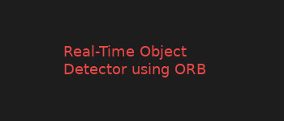
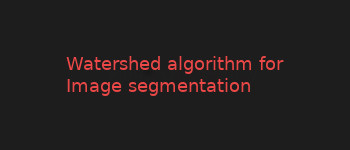
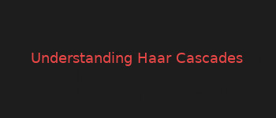

Grandmaster.dev
About
Blog
Contact
Oriented FAST and Rotated BRIEF
Here you will learn to implement ORB algorithm for feature location.
Read More

Object Detection using ORB
Here you will learn to implement ORB algorithm for real time object detection using webcam.
Read More
Grab Cut
Here you will learn to implement GrabCut algorithm for removing background.
Read More

Watershed Algorithm
Here you will learn to implement Watershed algorithm for Image segmentation.
Read More

Haar Cascades
Here you will learn about Haar cascades.
Read More
Face Detection
Here you will learn to implement Face Detection using Haar Cascade on a image.
Read More
Face Detection using webcam
Here you will learn to implement Face Detection using Haar Cascade on a real time video by webcam.
Read More
Histogram of Oriented Gradients
Here you will learn to implement HOG (Histogram of Oriented Gradients) algorithm.
Read More
Car Detection
Here you will learn to implement Car Detection using Haar Cascade in video.
Read More
«
1
2
3
4
5
»